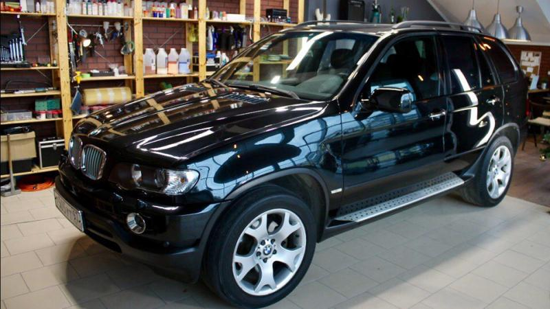
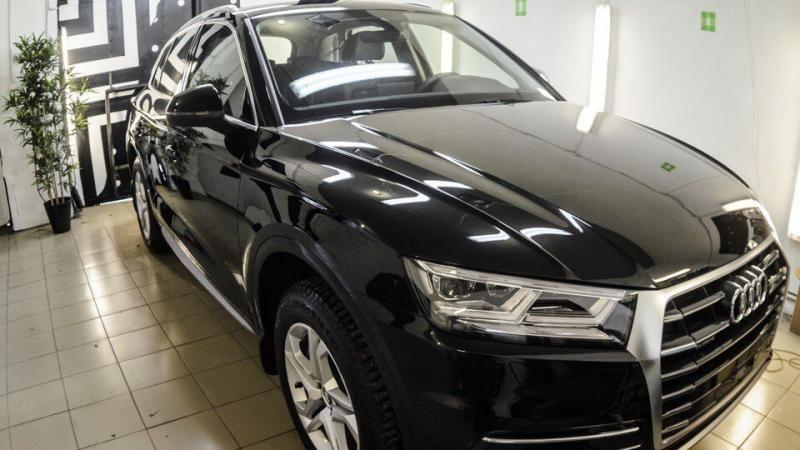

Обработка кузова защитным составом
Если Вы хотите защитить лакокрасочное покрытие кузова от механических и химических воздействий, мы будем рады
видеть Вас в нашем detailing центре.


С учетом ваших пожеланий и условий эксплуатации автомобиля мы подберем нужный защитный составов.
ЖИДКОЕ СТЕКЛО
Срок службы 1 год
- Блеск и гладкость
- Гидрофобные свойства
- Защита от выгорания
- Защита от щелочи
(оформление на старом сайте можно глянуть: https://mastercar-detailing.ru/services/zashchita_kuzova_keramikoy)
Керамика
Срок службы 1 год
- Блеск
- Защита от выгорания
- Высокая химическая стойкость
- Защита от мелких царапин
- Эффект антиграффити
Жидкое стекло + Керамика
Срок службы до 3х лет
- Блеск
- Гидрофобные свойства
- Защита от выгорания
- Высокая химическая стойкость
- Защита от мелких царапин
- Эффект антиграффити
В документе непонятно указано ниже не стилизовал текст
Жидкое стекло
сводка:
Жидкое стекло известно многим, как состав для защиты кузова автомобиля. Жидкое стекло стало популярным среди автолюбителей именно из-за своего названия. Стекло ассоциируется с материалом, который тяжело поцарапать, поэтому подсознательно мы и думаем, что жидкое стекло — это надежная защита кузова автомобиля от любых механических воздействий. На самом деле жидкое стекло защищает только от химического воздействия агрессивной окружающей среды. Если вам необходима защита от сколов и царапин, то ознакомьтесь с такой услугой как ((тут идет гиперрсылка на услуга оклейка пленкой) ЗАЩИТА КУЗОВА БРОНЕПЛЕНКОЙ.
Жидкое стекло это состав из диоксида кремния (SiO2) и различных химических добавок, придающих автомобилю дополнительный блеск и защиту от щелочи на мойках, дорожных солей и выгорания на солнце.
Все жидкие стекла ложатся защитной пленкой на кузов автомобиля и служат примерно год.
• Состав под названием керамика. защищает от мелких царапин, “паутинки” и затертостей; сводит к минимуму сколы, появляющиеся из-за механических повреждений; борется с абразивным воздействием мелкого гравия и песка; снижает влияние УФ-лучей, грязи, воды; борется с последствиями воздействия коррозии и дорожных реагентов.
Когда нанесен на поверхность защитный состав, она обретает глянцевитость, насыщенный цвет и красивый блеск. Его иначе называют эффектом леденца. Защитные свойства лучше, если сравнивать с остальными покрытиями, а если в средстве содержатся Tio2 и SiC, то они способствуют максимальному укреплению автомобильного лака, и он уже не боится механических повреждений.
Керамика минимизирует риск повреждений лакокрасочного покрытия на мойке, где применяются низкокачественные химические средства. Она обладает прекрасным гидрофобным эффектом.